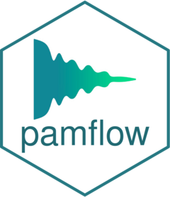

Export audio clips and spectrograms for the sampled events (WAV + FLAC)
Source:R/05_validation_export.R
pam_validation_export.RdFor every row of validation_samples.csv whose files are missing, cuts a
clip (event plus validation$clip_pad_s seconds of context on each side)
from the audio the run read, and draws a spectrogram PNG with FFmpeg.
Dynamically uses -c:a flac or -c:a pcm_s16le based on the target clip file
extension. Existing files are kept, so it can be rerun after each new round.
Examples
# \donttest{
if (nzchar(Sys.which("ffmpeg"))) {
ex <- pam_example_project()
# the later stages read the master table that the scan builds
res <- suppressMessages(pam_scan_audio(ex$cfg))
proc <- suppressMessages(pam_process_detections(ex$cfg))
new <- suppressMessages(pam_validation_draw(ex$cfg, strategy = "random", n = 3))
out <- suppressMessages(pam_validation_export(ex$cfg))
out$n_ok
}
# }